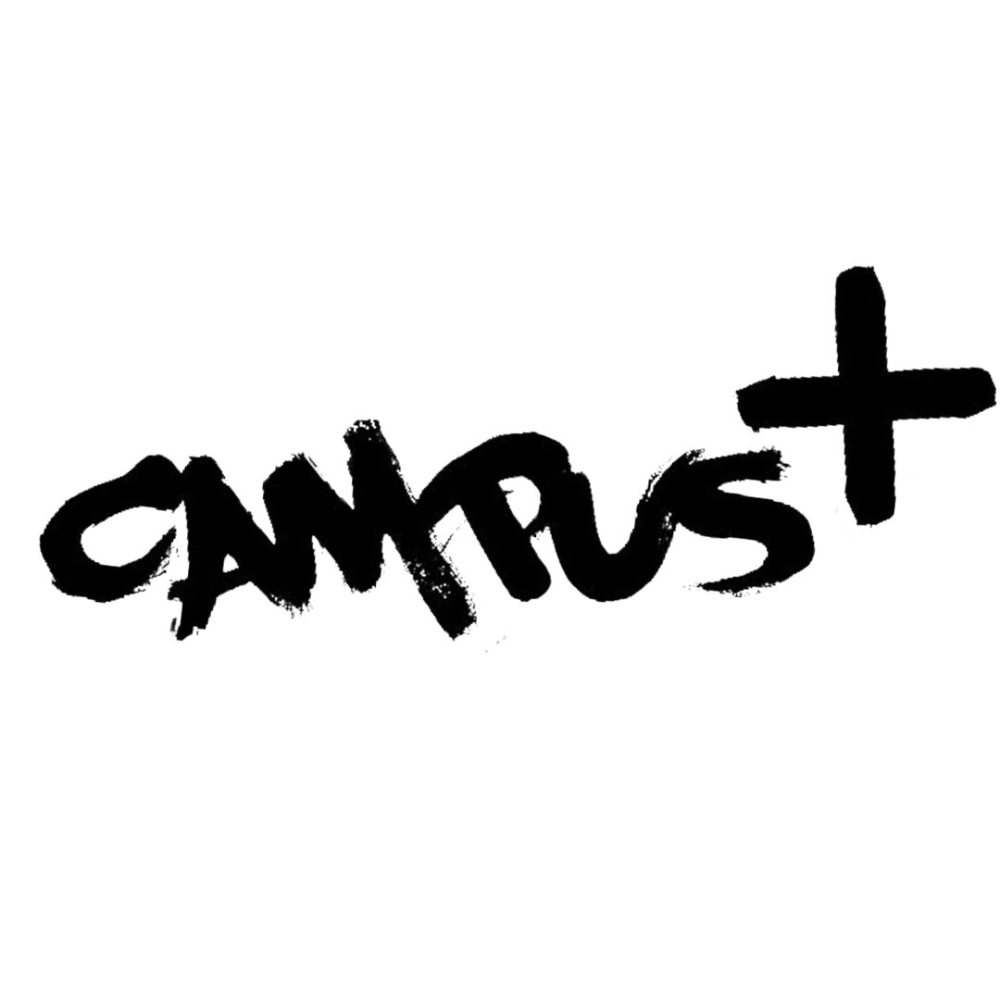

Ledige jobs
Sceneopsætning
Hjælp til med Sceneopsætning
SE JOB
Musikalsk indslag
frivillig til musikalske indslag på Campus+
SE JOB
Madlavning
Hjælp til med maden på Campus+
SE JOB
Frivillig medhjælper
Bliv frivillig medhjælper på Campus+
SE JOB